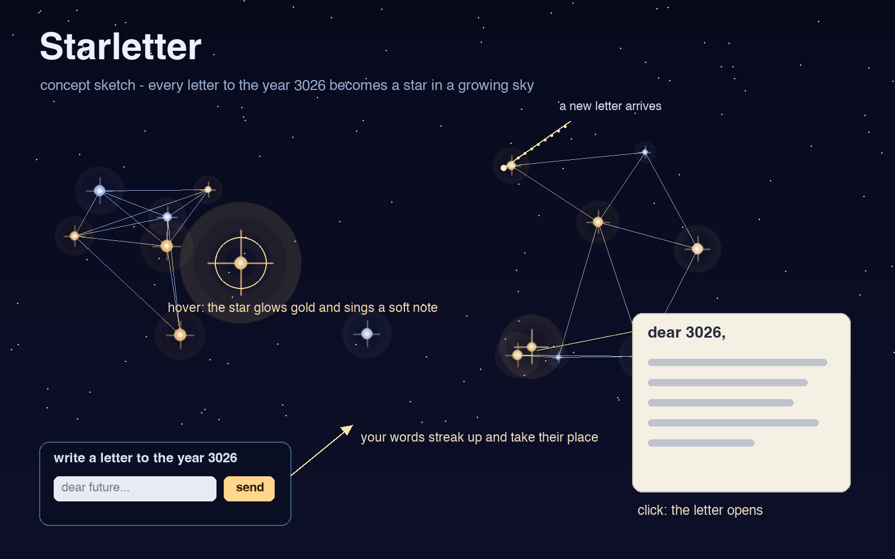

every letter to the year 3026 becomes a star in a growing sky
Aito Nurakhan - Interactive Internet Art - Nov 13, 2026
Starletter is an interactive night sky where every letter written to the year 3026 becomes a star, brightening into gold and singing a soft note when you approach, opening when you click. Write your own letter and it streaks across the page as a comet and takes its place among the constellations.
